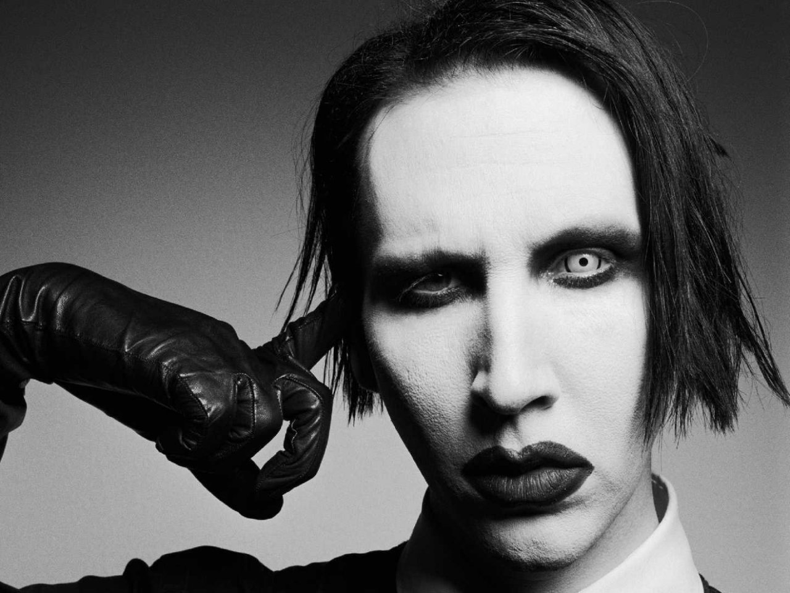

¡Hola mundo!
Este es mi primer sitio web
Tiene temática de MARILYN MANSON
Marilyn Manson, el cantante, compositor, actor, escritor y director de cine.
Se trata de un pequeño resumen de su historia, algunas fotos, datos, y otras cosas.
Espero que lo disfruten UwU
¿Por qué hacer un sitio web sobre Marilyn Manson?
Por que sí. c:
En realidad este ha sido uno de mis artistas favoritos a lo largo de mi vida.
¿Por qué no hacer un sitio sobre la banda Marilyn Manson?
Porque considero que es mucho más interesante la historia de Brian Hugh Warner, A.K.A. Marilyn Manson por su
nombre artístico, que la historia de la banda jajaja. Sin embargo, en este sitio también tocaré temas
relacionaddos sobre la música de la banda (;

Línea del tiempo de la vida de Marilyn Manson

- 1969 Nace en Canton, Ohio, EUA bajo el nombre de Brian Hugh Warner
- 1989 Creó su nombre artístico uniendo los de Marilyn Monroe y el del criminal Charles Manson, iconos
antagónicos de la cultura norteamericana
- 1990 Estudió Periodismo y Teatro en el Broward Community College en Fort Lauderdale, Florida. Formó la banda
Marilyn Manson and the Spooky Kids
- 1992 El nombre de su banda se redujo a Marilyn Manson
- 1994 Lanzó su primer disco, titulado Portrait of an American Family
- 1997 Hizo su debut en el cine como actor en la película Lost Highway, dirigida por David Lynch
- 1998 Escribió su autobiografía The Long Hard Road out of Hell en colaboración con Neil Strauss
- 1999 Pintó sus primeras acuarelas a las que denominó como "piezas conceptuales realizadas en cinco minutos"
- 2002 Presentó su primera exposición The Golden Age of Grotesque en Los Angeles Contemporary Exhibitions
Centre
- 2004 Su segunda exposición Trismegistus se exhibió en el Hotel Lutecia de París Francia y en el Club
40seconds en Berlín, Alemania
- 2006 Inauguró su galería de arte Celebritarian Corporation Gallery of Fine Art en Los Ángeles, California
- 2007 Publica el álbum EAT ME, DRINK ME.
- 2015 Lanza THE PALE EMPEROR
- 2017 Sale el álbum Heaven Upside Down
- 2020 Publica el álbum WE ARE CHAOS
- 2021 Enfrenta múltiples acusaciones de abuso y conducta inapropiada por parte de varias exparejas y otras
personas, esto ocasiona que pierda contratos con su sello discográfico y otros colaboradores
Como podrás ver, Marilyn Manson tiene múltiples facetas, entre ellas, la menos conocida quizás, la de pintor.
Top de mis álbumes favoritos hasta 2024
- EAT ME, FRINK ME

- Antichrist Superstar

- Mechanical animals

Algunas de mis canciones favoritas de toda su discografía
Galería de pinturas
A continuación, algunas de las pinturas que más me han gustado de MM


Redes sociales
Más de Marilyn Manson
En el siguiente link podrás encontrar más datos de Marilyn Manson :)
Más de MM
Mi primer sitio web, con amor, Perla R.